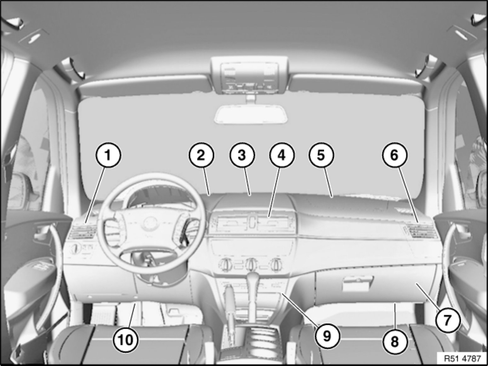
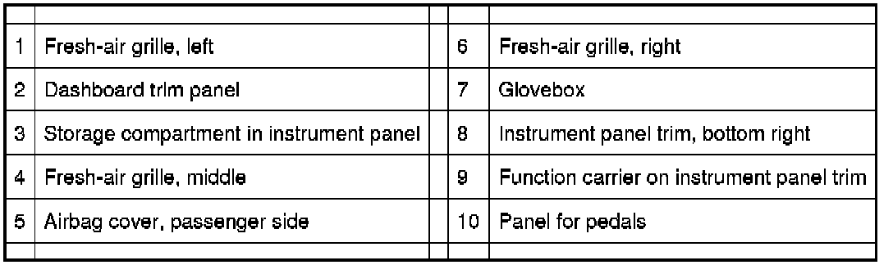

Operation CHARM
: Car repair manuals for everyone.
Home
>>
BMW
>>
2007
>>
X3 3.0si (E83) L6-3.0L (N52K)
>>
Repair and Diagnosis
>>
Instrument Panel, Gauges and Warning Indicators
>>
Dashboard / Instrument Panel
>>
Service and Repair
>>
51 45 ... Overview of Instrument Panel
51 45 ... Overview of Instrument Panel
51 45 .. - Overview of instrument panel

